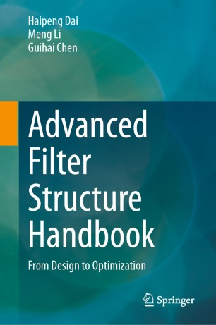

端智能研究小组LANDS（先进网络与数据科学研究组）
Nanjing University
端智能研究小组LANDS（先进网络与数据科学研究组）
Nanjing University
Publications

Advanced Filter Structure Handbook: From Design to Optimization
About this book
This book provides a comprehensive guide to understanding and implementing advanced data filters, from traditional Bloom filters to cutting-edge innovations like Ribbon Filter, Bamboo Filter, and SNARF. It systematically explores read-only filters, space-elastic filters, streaming filters, and range filters, offering detailed insights into design principles and implementation methods.
Preprints
[Preprint]SmartRAG: Native Graph-Based RAG for Mobile Device arXiv preprint arXiv:2607.14661, 2026.
2027
[VLDB'27]Replace or Augment: Rethinking the Role of Learned Indexes in Relational Databases In Proceedings of the 53rd International Conference on Very Large Data Bases (VLDB, CCF-A), Athens, Greece, Aug 23-27, 2027. Corresponding author
2026
[ATC'26]Scaling LLM Agent Tool Access: The MCP Gateway Accepted to the ACM SIGOPS Annual Technical Conference (ATC), 2026.
[CoRL'26]Continual Quadruped Robots Coordination via Semantic Skill Discovery Accepted to the Conference on Robot Learning (CoRL), 2026.
[ISCA'26]SMoE: An Algorithm-System Co-Design for Pushing MoE to the Edge via Expert Substitution In Proceedings of the 53rd Annual International Symposium on Computer Architecture (ISCA, CCF-A), Raleigh, USA, June 27-July 1, 2026. Corresponding author
[ICDE'26]When Complex Event Recognition Meets Cloud-Native Architectures In Proceedings of the 42nd IEEE International Conference on Data Engineering (ICDE, CCF-A), Montréal, Canada, May 4-8, 2026.
[APNet'26 Poster]Rethinking MoE Routing for Commodity GPUs In Proceedings of the 10th Asia-Pacific Workshop on Networking (APNet, Poster), 2026.
[APNet'26 Poster]Scaling LLM Agent Tool Access at Cloud Scale In Proceedings of the 10th Asia-Pacific Workshop on Networking (APNet, Poster), 2026.
[UbiComp'26 Companion]MobileOC: Sensing-Grounded Persona Agents for On-Device Context-Aware Companionship In Companion of the 2026 ACM International Joint Conference on Pervasive and Ubiquitous Computing (UbiComp Companion, Student Research Competition), 2026. Corresponding author
[ICDE'26]Robust Index Benefit Estimation via Hierarchical and Two-dimensional Feature Representation In Proceedings of the 42nd IEEE International Conference on Data Engineering (ICDE, CCF-A), Montréal, Canada, May 4-8, 2026.
[WWW'26]Prototype Augmentation-based Edge-end Heterogeneous Collaborative Learning In Proceedings of the World Wide Web Conference (WWW, CCF-A), Dubai, United Arab Emirates, April 13-17, 2026.
[EDBT'26]Evaluating Learned Indexes in LSM-tree Systems: Benchmarks, Insights and Design Choices International Conference on Extending Database Technology (EDBT), Tampere, Finland, March 24-27, 2026.
[SIGMOD'26]Hourglass: An Adaptive Range Filter with Lightweight Hybrid Encoding The 52th ACM SIGMOD/PODS International Conference on Management of Data (SIGMOD, CCF-A), 2026.
[TMC'26]Efficient VLM Inference System with LoRA Adapters at the Edge IEEE Transactions on Mobile Computing (TMC), 2026.
[TKDE'26]Accelerating Complex Event Recognition via Range Bitmap-based Indexes with Window-wise Filtering IEEE Transactions on Knowledge and Data Engineering (TKDE), 2026.
[TMC'26]Online Caching with Delayed Hits in Multi-Server Edge Networks IEEE Transactions on Mobile Computing (TMC), 2026.
2025
[ICPADS'25]SecFinder: An IoT Device Identification System Based on Flow-level Traffic in Smart Home In Proceedings of the 31st IEEE International Conference on Parallel and Distributed Systems (ICPADS, CCF-C), Hefei, China: IEEE, 2025. Best Paper Award
[APWeb'25]NALI: NUMA-aware Adaptive Learned Index for In-Memory Multi-core Databases In Proceedings of the APWeb-WAIM joint International Conference on Web and Big Data (APWeb, CCF-C), Shenyang, May 19-23, 2025.
[ICDE'25]Local-to-cloud Database Synchronization via Fine-grained Hybrid Compression In Proceedings of the IEEE International Conference on Data Engineering (ICDE, CCF-A), Hong Kong, May 19-23, 2025.
[EuroSys'25]Empower Vision Applications with LoRA LMM In Proceedings of the 20th ACM European Conference on Computer Systems (EuroSys, CCF-A), Rotterdam, The Netherlands, March 30-April 3, 2025.
[SIGMOD'25]VEGA: An Active-tuning Learned Index with Group-Wise Learning Granularity In Proceedings of the ACM Conference on Management of Data (SIGMOD, CCF-A), Berlin, Germany, June 22-27, 2025.
[TMC'25]RoLEX: A LoRa-based Rotation Speed Measurement System for Ubiquitous Long-distance Monitoring Applications IEEE Transactions on Mobile Computing (TMC), 2025.
[TPDS'25]Parallel Wormhole Filters: High-Performance Approximate Membership Query Data Structures for Persistent Memory IEEE Transactions on Parallel and Distributed Systems (TPDS), 2025.
2024
[INFOCOM'24]The Reinforcement Cuckoo Filter In Proceedings of the 23rd IEEE International Conference on Computer Communications (INFOCOM), Vancouver, Canada, May 20-23, 2024.
[SIGKDD'24]ACER: Accelerating Complex Event Recognition via Two-Phase Filtering under Range Bitmap-Based Indexes In ACM Knowledge Discovery and Data Mining (SIGKDD, CCF-A), Barcelona, Spain, August 25-29, 2024.
[JOS'24]The Cost-sensitive Variable-hash Cuckoo Filter Journal of Software (软件学报, 中文 CCF-A), 2024.
[TON'24]Bamboo Filters: Make Resizing Smooth and Adaptive (Journal Version). IEEE/ACM Transactions on Networking (ToN, CCF-A), 2024.
[TON'24]A Generic Framework for Finding Special Quadratic Elements in Data Streams IEEE/ACM Transactions on Networking (ToN, CCF-A), 2024.
[VLDB'24]Oasis: An Optimal Disjoint Segmented Learned Range Filter In Proceedings of the 50th International Conference on Very Large Data Bases (VLDB), Guangzhou, China, Aug 28-Sep 1, 2024.
[TKDE'24]A Survey of Multi-dimensional Indexes: Past and Future Trends IEEE Transactions on Knowledge and Data Engineering (TKDE, CCF-A), 2024.
2023
[ICDM'23]Variable-length Encoding Framework: A Generic Framework for Enhancing the Accuracy of Approximate Membership Queries In Proceedings of the 23rd IEEE International Conference on Data Mining (ICDM), Shanghai, China, December 1-4, 2023.
[ICDM'23]MoonKV: Optimizing Update-intensive Workloads for NVM-based Key-value Stores In Proceedings of the 23rd IEEE International Conference on Data Mining (ICDM), Shanghai, China, December 1-4, 2023.
[VLDB'23]ShadowAQP: Efficient Approximate Group-by and Join Query via Attribute-oriented Sample Size Allocation and Data Generation In Proceedings of the 49rd International Conference on Very Large Data Bases (VLDB), Vancouver, Canada, Aug 28-Sep 1, 2023.
[TKDE'23]Seesaw Counting Filter: A Dynamic Filtering Framework for Vulnerable Negative Keys IEEE Transactions on Knowledge and Data Engineering (TKDE), 2023.
2022
[ICDE'22]Bamboo Filters: Make Resizing Smooth In Proceedings of the 38th IEEE International Conference on Data Engineering (ICDE), Virtual Event, May 9-12, 2022.
[WWW'22]Seesaw Counting Filter: An Efficient Guardian for Vulnerable Negative Keys During Dynamic Filtering In Proceedings of the World Wide Web Conference (WWW), Lyon, France, April 25–29, 2022.
[WWW'22]DUET: A Generic Framework for Finding Special Quadratic Elements in Data Streams In Proceedings of the World Wide Web Conference (WWW), Lyon, France, April 25–29, 2022.
[TKDE'22]Bloom Filter with Noisy Coding Framework for Multi-Set Membership Testing IEEE Transactions on Knowledge and Data Engineering (TKDE), 2022.
[VLDBJ'22]A Pareto Optimal Bloom Filter Family with Hash Adaptivity The VLDB Journal (VLDBJ), 2022.
2021
[ICDE'21]Hash Adaptive Bloom Filter In Proceedings of the 37th IEEE International Conference on Data Engineering (ICDE), Virtual Event, April 19-22, 2021.
[TKDE'21]ROVEC: Runtime Optimization of Vectorized Expression Evaluation for Column Store IEEE Transactions on Knowledge and Data Engineering (TKDE), 2021.
2020
[TON'20]Finding Persistent Items in Distributed Datasets IEEE/ACM Transactions on Networking (TON), Vol. 28, No. 1, pages 1-14, 2020.
[TON'20]Thresholded Monitoring in Distributed Data Streams IEEE/ACM Transactions on Networking (TON), Vol. 28, No. 3, pages 1033-1046, 2020.
[IPDPS'20]Packet-in Request Redirection for Minimizing Control Plane Response Time In Proceedings of the 34th IEEE International Parallel and Distributed Processing Symposium (IPDPS), New Orleans, USA, May 18-22, 2020.
Before 2020
[ICDCS'19]Thresholded Monitoring in Distributed Data Streams In Proceedings of the 39th IEEE International Conference on Distributed Computing (ICDCS), Dallas, Texas, USA, July 7-10, 2019. Acceptance rate: 19.6%.
[TON'18]Identifying and Estimating Persistent Items in Data Streams IEEE/ACM Transactions on Networking (TNET), Vol. 26, No. 6, pages 2429-2442, 2018.
[INFOCOM'18]Finding Persistent Items in Distributed Datasets In Proceedings of the 37th Annual IEEE International Conference on Computer Communications (INFOCOM), Honolulu, HI, USA, April 15-19, 2018. Acceptance rate: 309/1606 = 19.2%.
[SIGMETRICS'16]Noisy Bloom Filters for Multi-Set Membership Testing In ACM SIGMETRICSIFIP Performance (SIGMETRICS), Antibes Juan-Les-Pins, France, June 14-18, 2016. Acceptance rate: 28208 = 13.46%.